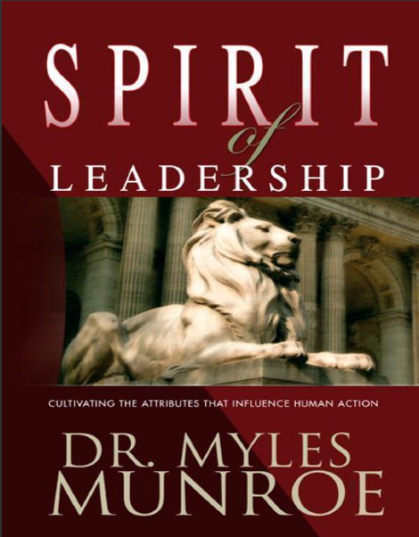

Books for spiritual growth
Explore curated downloads for faith, leadership, personal development, and financial wisdom. Browse the shelves, choose a title, and keep growing with resources you can return to often.
Explore curated downloads for faith, leadership, personal development, and financial wisdom. Browse the shelves, choose a title, and keep growing with resources you can return to often.
Cover-led picks from the current library.
A clear starting point for new believers learning their identity in Christ.
DownloadBuild thought patterns that support faith, discipline, and spiritual focus.
Download
Learn the inner qualities that shape influence, service, and responsibility.
DownloadExplore principles for true wealth, prosperity, stewardship, and purpose.
DownloadDownload trusted resources to support your walk with God, strengthen character, and grow in purpose.
Deepen your faith and identity in Christ with these guides.
Build influence, integrity, and service through godly leadership books.
Learn discipline, excellence, and daily habits that transform your life.
Discover godly principles for money, prosperity, and stewardship.